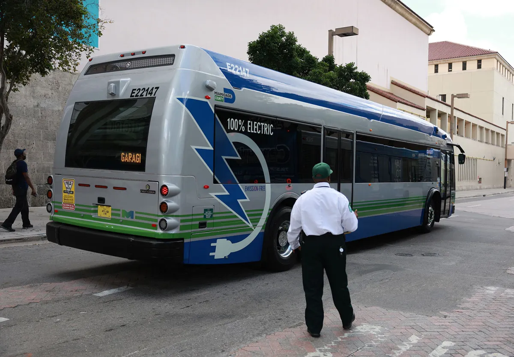
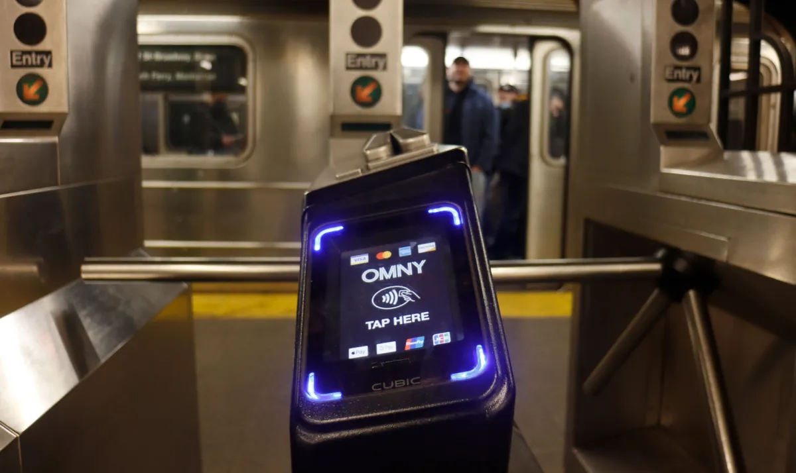

The overlooked tech that kept cities moving in 2023
The moons orbiting Jupiter and Saturn appear to have subsurface oceans which could support life beyond Earth. But it’s not clear why these seas exist at all.

Over here at TechCrunch, our time is often spent finding and reporting on the next new new thing in mobility, from autonomous drones and electric air taxis to self-driving trucks and even batteries made of paper. While this tech, in theory, may someday help people and goods move from point A to B, much of it is just that — theory. Hope. Promise. Showy demos to impress VC investors.
That’s why we dug into the technology that’s helping cities move today. Some of it is unsexy, but transportation is, more often than not, a utility.
We’ll take a close look at the tech helping move two U.S. cities — Miami and New York City — and run through a few other standout innovations in 2023.
How Miami uses on-demand transit
Miami has been working with transit tech company Via to bring in on-demand transit since 2020. The service, formerly called GO Connect, launched during the COVID-19 pandemic as a first- and last-mile solution, filling in the gaps between where people live and major transit hubs. Three years later, Miami-Dade rebranded the service to MetroConnect, adopted it into its broader public transit network and added four new service zones.
Within a month of rebranding and expanding, MetroConnect completed 69% more rides and saw a 70% increase in ridership, according to Via. The company also said MetroConnect has, since its inception, increased access to 57% more jobs within a 45-minute commute by connecting riders to transit hubs, two-thirds of whom report that they do not have access to a car.
Carlos Cruz-Casas, chief innovation officer at Miami’s department of transportation and public works, told TechCrunch MetroConnect has helped boost public transit ridership, which saw a drop during the COVID-19 pandemic.
“There’s no substitute for well-run fixed-route service,” said Cruz-Casas. “We actually realized that the best marketing tool for getting people back on transit is frequency.”
While the city expanded MetroConnect’s on-demand microtransit, it also worked with one of Via’s planning products to optimize its bus network. The city used Remix, the transit planning tech that was acquired by Via in 2021, to build its Better Bus Network plan. The plan, which went live in November, involved realigning 99 bus routes to create a network of high-frequency corridors.
“We went from five corridors that were frequent to more than 20 — for us that means running every seven and a half minutes, 10 minutes, 15 minutes. All day, everyday,” said Cruz-Casas. “Miami-Dade county is bigger than some states, though. We can’t provide that frequency everywhere. That’s where the on-demand transit comes in.”
Eventually, Via will add vehicles from May Mobility, a driverless technology company, to its MetroConnect fleet in Miami. May Mobility and Via recently announced a partnership to provide a rider-only on-demand microtransit service in the retirement community of Sun City, Arizona. May’s style has so far been to move carefully, so we don’t expect to see a widespread Miami launch for some time.
Cruz-Casas also noted that Miami is working with Via on a full intermodal trip planning solution between fixed-route and on-demand services. Miami’s transportation department has been partnering with a company called Swiftly to provide big data analytics and more accurate real-time information for its GO app.
“I am a big fan of the technologies that allow for real-time feedback because you feel empowered to make decisions and it’s a lot more comfortable to use public transit when you have accurate real-time information,” said Cruz-Casas.
The moons orbiting Jupiter and Saturn appear to have subsurface oceans which could support life beyond Earth. But it’s not clear why these seas exist at all.
New York City’s iconic subway system is more than 100 years old. Most of the investment into the subway today is focused on modernization to help the century-old system meet the needs and expectations of customers living in an era of high technology.
Part of that has been reducing the friction to ride. Anyone who’s ridden the NYC subway will know that frustrating, and bizarrely nostalgic, feeling of rushing to make your train, swiping your MetroCard and barreling forward through the turnstiles in one motion, only to be bodily met with an unmoving metal bar because you didn’t swipe correctly or, even worse, have INSUFFICIENT FARE.
The Metropolitan Transport Authority (MTA) is phasing out the MetroCard in favor of the OMNY system, a contactless, open-loop payment system. Riders can tap their credit and debit cards or their phones (if they have a digital wallet) to quickly and easily pay the subway fare and move through the turnstiles. For those who are unbanked and need to pay with cash, the MTA is introducing an OMNY card, which can be accessed via vending machines throughout the city.
“We’re up to over 50% of subway riders and a significant percentage of bus riders using tap-and-go one way or another,” Jamie Torres-Springer, president of MTA construction and development, told TechCrunch. “And it’s actually even better. Seventy percent of the riders who are currently eligible to use OMNY are using it.”
During the COVID-19 pandemic, the MTA’s ridership fell to about 5%. Today, the service is at around 80% of pre-COVID ridership, according to Torres-Springer.
“Very interestingly, as we’ve recovered ridership over the last year or so, that entire recovery has been using OMNY, and MetroCard users have been flat,” he said. “Which means that through the convenience, we are attracting people back or attracting new riders to the system.”
The full phase-out of the MetroCard won’t happen until all MTA users can easily access the OMNY payment platform.
Another quintessential NYC subway experience is riding to work when suddenly the train stops in a tunnel. And it doesn’t move. The conductor’s voice crackles over the loudspeaker and you think you hear something about a signal malfunction. You check your phone and have no reception. There will be no texting your boss to let them know you’ll be late. All you can do is pray for movement.
The MTA is working on making experiences like that less common, and we’ll get to that in a minute, but probably a nearer-term Band-Aid for such an occasion is the agency’s plan to bring cell service to all subway stations and tunnels. The city signed a deal in 2022 with Boldyn, formerly Transit Wireless, to build out cell signal in all subway tunnels. Today, it’s in stations citywide, which can carry you through to many of the tunnels as long as they’re not of a significant length.
Having service in the tunnels will be helpful for trip planning, and the city is working to ensure better real-time information through communication-based train control (CBTC). CBTC uses telecommunications between the train and track equipment to manage traffic. “Now you always know exactly where the trains are, and you can run them closer together and faster,” said Torres-Springer, noting that the 7 line saw on-time performance improve from 68% to 91%, and speeds increase from 8% to 14%, after implementation of the technology.
CBTC isn’t exactly new technology. It was initially adopted close to 30 years ago, but the MTA is ramping up installations. The agency is investing $6.7 billion out of a total $55 billion five-year program into CBTC improvements, and currently has five lines under construction, with plans to do another two “substantial, long lines.” The MTA works with telecommunications providers Siemens, Thales and Hitachi to make the signals work. “We’ve been around for 100 years. A lot of the information about the assets is tucked into somebody’s notebook in a shop somewhere,” he said. “First we got to get the inventory. Once we do that, we can really work with predictive maintenance analytics tools.”